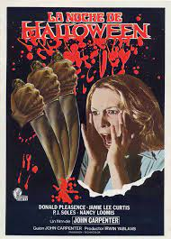
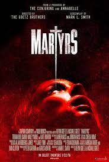
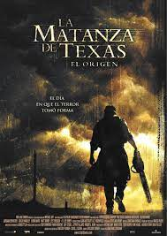

Las películas de terror más aterradoras, según la ciencia
La ciencia determinó cuáles eran las películas de terror que más miedo daban según la frecuencia cardíaca a la que llegaba el público. Este año, The Science of Scare Project, la responsable de realizar el estudio, ha vuelto a realizarlo con más gente (250 sujetos)
3. La noche de hallowen (1978)
Director: John Carpenter
Michael Myers, un hombre que es pura maldad y que mató a su propia hermana a los seis años, escapa de un sanatorio ya adulto y regresa a su ciudad natal para venganza. Laurie (Jamie Lee Curtis) tiene que enfrentarse a él.

2. Mártires (2008)
Director: Pascal Laugier
Esta es la película que más te revuelve el estómago, en la línea de las películas francesas de terror extremo de los últimos tiempos. La casa de una familia burguesa esconde un sótano con el experimento más inquietante jamás concebido. Aunque es una película muy bien hecha, no podemos recomendarla a cualquiera que no esté muy equilibrado.

3. La matanza de texas (1978)
Director: Tobe Hooper
En pleno apogeo de la Guerra de Vietnam, un grupo de jóvenes hippies viaja a través de Texas y son atacados por una familia de caníbales. La película fue originalmente anunciada como tratara una historia verdadera, en una jugada maestra de marketing, sobrepasando de paso todas las líneas rojas de los que era aceptable para una película comercial.
